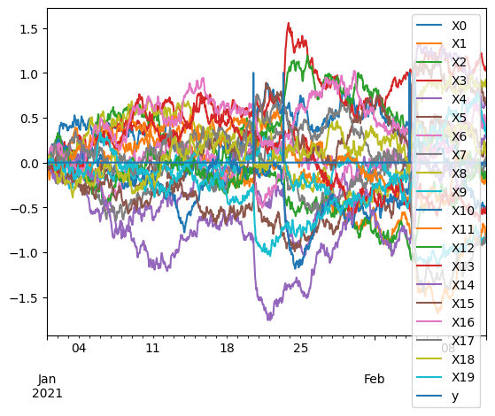
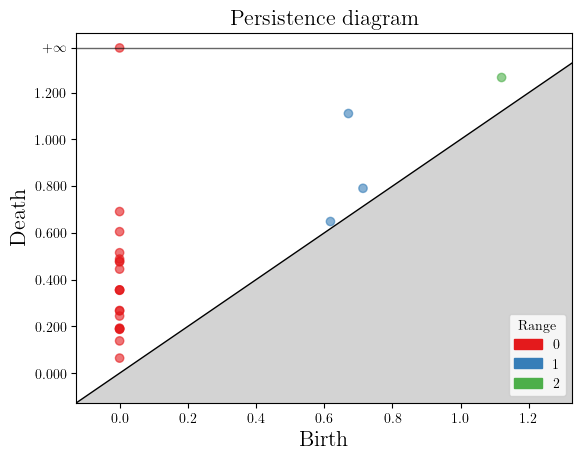
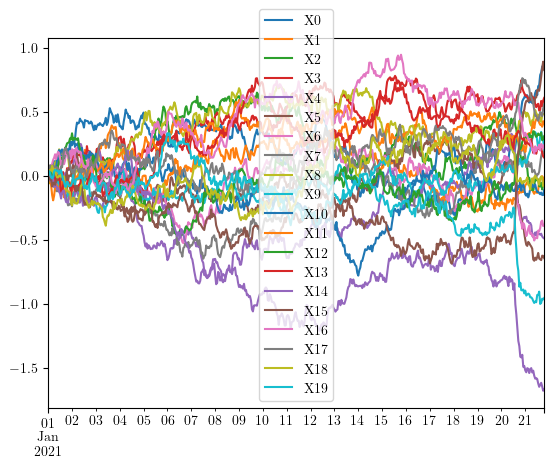
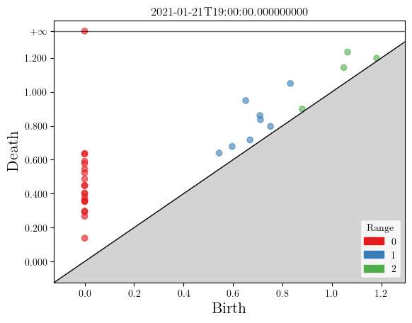
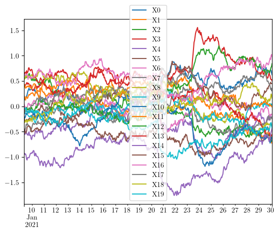
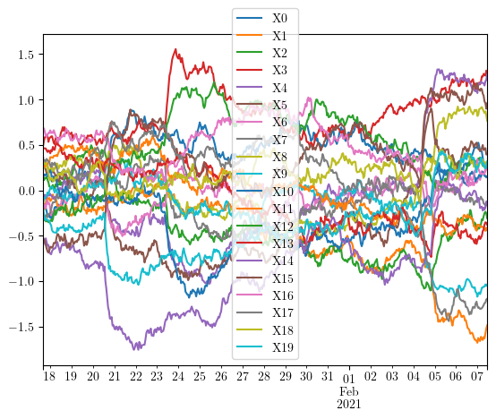
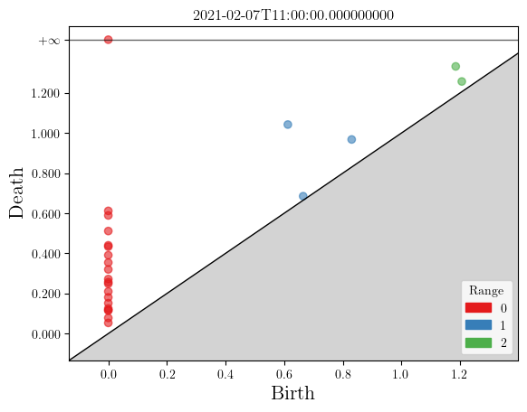
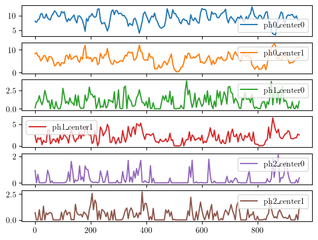
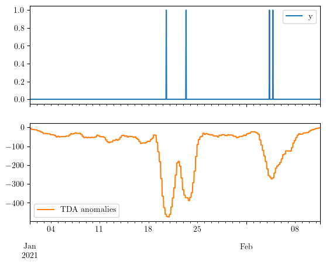

Learning on a modified Ornstein–Uhlenbeck process
The Ornstein-Uhlenbeck process is an auto-regressive process of order 1, and can be understood as a random walk that can be used for modelling timeseries in applicative fields such as physics, biology or finance. We generate that process and disturb it at times with gaussian noise for demonstrating this component.
[1]:
import numpy as np
def ornstein_uhlenbeck_anomaly(
t,
size=1,
noise_scale=1,
mean_reverting=1,
anomaly_freq=1,
anomaly_duration=.1,
anomaly_scale=1,
seed=314,
):
rng = np.random.RandomState(seed)
length, = t.shape
y = np.zeros(length)
X = np.empty((length, size))
X[0] = 0
target = np.zeros(size)
for i in range(1, length):
dt = t[i] - t[i - 1]
target *= np.exp(-dt / anomaly_duration)
X[i] = rng.normal(
target + (X[i - 1] - target) * np.exp(-mean_reverting * dt),
noise_scale * dt ** .5
)
if rng.rand() < dt / anomaly_freq:
y[i] = 1
target += rng.normal(scale=anomaly_scale, size=size)
return X, y
[2]:
import numpy as np
import pandas as pd
t = np.arange(1000)
t = t / t.shape[0]
pre_X, pre_y = ornstein_uhlenbeck_anomaly(
t,
size=20,
noise_scale=1,
mean_reverting=3,
anomaly_freq=.1,
anomaly_duration=0.005,
anomaly_scale=40,
)
t = pd.to_datetime('2021-01-01') + pd.Timedelta(1, 'h') * np.arange(t.shape[0])
X = pd.DataFrame(pre_X, index=t, columns=[f'X{i}' for i in range(pre_X.shape[1])])
y = pd.DataFrame(pre_y[:, None], index=t, columns=['y'])
data = (X, y)
pd.concat(data, axis=1).plot()
# X.to_csv("oua.csv")
[2]:
<Axes: >

Topological embedding of a multiple time series
The persistence diagram transform
A major tool from the Topological Data Analysis (TDA) field is the persistence diagram, that summarizes information in the form of a set of points in \(\mathbf{R}^2\).
For instance if we try to extract topological information on the entire multiple timeseries X:
[3]:
from tdaad.topological_embedding import numpy_data_to_similarity, RipsPersistence
from gudhi import plot_persistence_diagram
sim_matrix = numpy_data_to_similarity(X)
rips = RipsPersistence(homology_dimensions=range(3), input_type="lower distance matrix")
global_pdiagram = rips.transform([sim_matrix])[0]
plot_persistence_diagram(global_pdiagram)
[3]:
<Axes: title={'center': 'Persistence diagram'}, xlabel='Birth', ylabel='Death'>

The sliding window algorithm
In order to capture local information and detect potential anomalies, we cut the multiple timeseries in regular chunks or windows, and apply the Persistence Diagram Transform on each window. Therefore we transform the original time series into a persistence diagram time series, for instance if we cut it in three parts:
[4]:
swv = np.lib.stride_tricks.sliding_window_view(X.index, X.shape[0]//2)[::200, :]
for window in swv:
sim_matrix = numpy_data_to_similarity(X.loc[window])
pdiagram = rips.transform([sim_matrix])[0]
X.loc[window].plot()
ax = plot_persistence_diagram(pdiagram)
ax.set_title(str(window[-1]))





Vectorizing topological information
These persistence diagrams carry the information associated to a homological dimension, but the number of these points cannot be predicted generally, and therefore persistence diagrams need to be vectorized in order to integrate a classical machine learning pipeline. This is done using the Atol and Archipelago tools from the Gudhi library, and the PersistenceDiagramTransformer is integrated into a larger pipeline making use of these tools.
Selecting a number of encoding points by dimension, n_centers_by_dim, this results in a representation method we call TopologicalEmbedding.
Now we apply the procedure from before with the sliding window algorithm. So instead of a single embedding vector, we get a vector for each window in the timeseries X:
[10]:
from tdaad.topological_embedding import TopologicalEmbedding
embedder = TopologicalEmbedding(window_size=50, n_centers_by_dim=2).fit(X)
embedding = embedder.transform(X)
embedding.plot(subplots=True)
[10]:
array([<Axes: >, <Axes: >, <Axes: >, <Axes: >, <Axes: >, <Axes: >],
dtype=object)

Anomaly Detection based on topological features
What is left is to analyze those topological features for detecting anomaly. We use a procedure from scikit-learn called EllipticEnvelope based on a robust covariance estimation procedure, that estimates the topological mean and covariance of the vectors and use these to produce the associated mahalanobis distance. Once this distance is defined, an anomaly score is simply derived from it.
[7]:
from tdaad.anomaly_detectors import TopologicalAnomalyDetector
detector = TopologicalAnomalyDetector(window_size=50, n_centers_by_dim=2, tda_max_dim=1).fit(X)
anomaly_score = detector.score_samples(X)
anomaly_score
[7]:
array([ -3.66095551, -3.66095551, -3.66095551, -3.66095551,
-3.66095551, -10.15469689, -10.15469689, -10.15469689,
-10.15469689, -10.15469689, -10.83554506, -10.83554506,
-10.83554506, -10.83554506, -10.83554506, -12.26298224,
-12.26298224, -12.26298224, -12.26298224, -12.26298224,
-12.81018062, -12.81018062, -12.81018062, -12.81018062,
-12.81018062, -17.13168556, -17.13168556, -17.13168556,
-17.13168556, -17.13168556, -18.49040837, -18.49040837,
-18.49040837, -18.49040837, -18.49040837, -23.058788 ,
-23.058788 , -23.058788 , -23.058788 , -23.058788 ,
-25.74936893, -25.74936893, -25.74936893, -25.74936893,
-25.74936893, -31.76809574, -31.76809574, -31.76809574,
-31.76809574, -31.76809574, -31.6051606 , -31.6051606 ,
-31.6051606 , -31.6051606 , -31.6051606 , -32.50561294,
-32.50561294, -32.50561294, -32.50561294, -32.50561294,
-33.68754803, -33.68754803, -33.68754803, -33.68754803,
-33.68754803, -34.03379664, -34.03379664, -34.03379664,
-34.03379664, -34.03379664, -38.48145452, -38.48145452,
-38.48145452, -38.48145452, -38.48145452, -38.65560478,
-38.65560478, -38.65560478, -38.65560478, -38.65560478,
-39.41334971, -39.41334971, -39.41334971, -39.41334971,
-39.41334971, -42.90029229, -42.90029229, -42.90029229,
-42.90029229, -42.90029229, -50.69685329, -50.69685329,
-50.69685329, -50.69685329, -50.69685329, -46.41068804,
-46.41068804, -46.41068804, -46.41068804, -46.41068804,
-50.40098257, -50.40098257, -50.40098257, -50.40098257,
-50.40098257, -48.82996051, -48.82996051, -48.82996051,
-48.82996051, -48.82996051, -48.15491751, -48.15491751,
-48.15491751, -48.15491751, -48.15491751, -48.29162426,
-48.29162426, -48.29162426, -48.29162426, -48.29162426,
-48.351086 , -48.351086 , -48.351086 , -48.351086 ,
-48.351086 , -45.42569388, -45.42569388, -45.42569388,
-45.42569388, -45.42569388, -46.66366825, -46.66366825,
-46.66366825, -46.66366825, -46.66366825, -39.50706012,
-39.50706012, -39.50706012, -39.50706012, -39.50706012,
-32.81582863, -32.81582863, -32.81582863, -32.81582863,
-32.81582863, -35.09661565, -35.09661565, -35.09661565,
-35.09661565, -35.09661565, -32.39007233, -32.39007233,
-32.39007233, -32.39007233, -32.39007233, -28.69533847,
-28.69533847, -28.69533847, -28.69533847, -28.69533847,
-31.37682114, -31.37682114, -31.37682114, -31.37682114,
-31.37682114, -32.13845418, -32.13845418, -32.13845418,
-32.13845418, -32.13845418, -30.67979283, -30.67979283,
-30.67979283, -30.67979283, -30.67979283, -37.3618799 ,
-37.3618799 , -37.3618799 , -37.3618799 , -37.3618799 ,
-46.96822549, -46.96822549, -46.96822549, -46.96822549,
-46.96822549, -53.80529255, -53.80529255, -53.80529255,
-53.80529255, -53.80529255, -52.0405797 , -52.0405797 ,
-52.0405797 , -52.0405797 , -52.0405797 , -54.72270732,
-54.72270732, -54.72270732, -54.72270732, -54.72270732,
-52.53029249, -52.53029249, -52.53029249, -52.53029249,
-52.53029249, -54.32162649, -54.32162649, -54.32162649,
-54.32162649, -54.32162649, -51.97379877, -51.97379877,
-51.97379877, -51.97379877, -51.97379877, -53.41448976,
-53.41448976, -53.41448976, -53.41448976, -53.41448976,
-52.24489333, -52.24489333, -52.24489333, -52.24489333,
-52.24489333, -49.62311859, -49.62311859, -49.62311859,
-49.62311859, -49.62311859, -40.7785058 , -40.7785058 ,
-40.7785058 , -40.7785058 , -40.7785058 , -44.56682185,
-44.56682185, -44.56682185, -44.56682185, -44.56682185,
-48.73463383, -48.73463383, -48.73463383, -48.73463383,
-48.73463383, -49.55638464, -49.55638464, -49.55638464,
-49.55638464, -49.55638464, -48.88197841, -48.88197841,
-48.88197841, -48.88197841, -48.88197841, -53.52776636,
-53.52776636, -53.52776636, -53.52776636, -53.52776636,
-65.80510059, -65.80510059, -65.80510059, -65.80510059,
-65.80510059, -75.59899543, -75.59899543, -75.59899543,
-75.59899543, -75.59899543, -80.50988188, -80.50988188,
-80.50988188, -80.50988188, -80.50988188, -77.6525158 ,
-77.6525158 , -77.6525158 , -77.6525158 , -77.6525158 ,
-77.03941021, -77.03941021, -77.03941021, -77.03941021,
-77.03941021, -68.68530605, -68.68530605, -68.68530605,
-68.68530605, -68.68530605, -68.76611303, -68.76611303,
-68.76611303, -68.76611303, -68.76611303, -63.67047032,
-63.67047032, -63.67047032, -63.67047032, -63.67047032,
-67.60217205, -67.60217205, -67.60217205, -67.60217205,
-67.60217205, -62.57984479, -62.57984479, -62.57984479,
-62.57984479, -62.57984479, -52.48767191, -52.48767191,
-52.48767191, -52.48767191, -52.48767191, -43.37478647,
-43.37478647, -43.37478647, -43.37478647, -43.37478647,
-41.50744603, -41.50744603, -41.50744603, -41.50744603,
-41.50744603, -46.17664302, -46.17664302, -46.17664302,
-46.17664302, -46.17664302, -45.38105947, -45.38105947,
-45.38105947, -45.38105947, -45.38105947, -51.01299723,
-51.01299723, -51.01299723, -51.01299723, -51.01299723,
-47.27763367, -47.27763367, -47.27763367, -47.27763367,
-47.27763367, -48.25334073, -48.25334073, -48.25334073,
-48.25334073, -48.25334073, -48.49835099, -48.49835099,
-48.49835099, -48.49835099, -48.49835099, -52.56632606,
-52.56632606, -52.56632606, -52.56632606, -52.56632606,
-50.42227802, -50.42227802, -50.42227802, -50.42227802,
-50.42227802, -57.61816427, -57.61816427, -57.61816427,
-57.61816427, -57.61816427, -63.3772348 , -63.3772348 ,
-63.3772348 , -63.3772348 , -63.3772348 , -74.38297329,
-74.38297329, -74.38297329, -74.38297329, -74.38297329,
-84.90327203, -84.90327203, -84.90327203, -84.90327203,
-84.90327203, -82.1054723 , -82.1054723 , -82.1054723 ,
-82.1054723 , -82.1054723 , -82.111408 , -82.111408 ,
-82.111408 , -82.111408 , -82.111408 , -82.37140653,
-82.37140653, -82.37140653, -82.37140653, -82.37140653,
-77.35207312, -77.35207312, -77.35207312, -77.35207312,
-77.35207312, -73.02306412, -73.02306412, -73.02306412,
-73.02306412, -73.02306412, -73.64090518, -73.64090518,
-73.64090518, -73.64090518, -73.64090518, -63.57203876,
-63.57203876, -63.57203876, -63.57203876, -63.57203876,
-57.2332708 , -57.2332708 , -57.2332708 , -57.2332708 ,
-57.2332708 , -39.78140811, -39.78140811, -39.78140811,
-39.78140811, -39.78140811, -41.43735094, -41.43735094,
-41.43735094, -41.43735094, -41.43735094, -78.5594364 ,
-78.5594364 , -78.5594364 , -78.5594364 , -78.5594364 ,
-128.91494972, -128.91494972, -128.91494972, -128.91494972,
-128.91494972, -182.0683358 , -182.0683358 , -182.0683358 ,
-182.0683358 , -182.0683358 , -271.80166054, -271.80166054,
-271.80166054, -271.80166054, -271.80166054, -364.75474567,
-364.75474567, -364.75474567, -364.75474567, -364.75474567,
-425.29590126, -425.29590126, -425.29590126, -425.29590126,
-425.29590126, -460.72627931, -460.72627931, -460.72627931,
-460.72627931, -460.72627931, -472.34690988, -472.34690988,
-472.34690988, -472.34690988, -472.34690988, -475.04820759,
-475.04820759, -475.04820759, -475.04820759, -475.04820759,
-461.05934088, -461.05934088, -461.05934088, -461.05934088,
-461.05934088, -422.08562251, -422.08562251, -422.08562251,
-422.08562251, -422.08562251, -374.07928156, -374.07928156,
-374.07928156, -374.07928156, -374.07928156, -320.77286491,
-320.77286491, -320.77286491, -320.77286491, -320.77286491,
-252.51230406, -252.51230406, -252.51230406, -252.51230406,
-252.51230406, -188.014073 , -188.014073 , -188.014073 ,
-188.014073 , -188.014073 , -180.03037434, -180.03037434,
-180.03037434, -180.03037434, -180.03037434, -205.92278657,
-205.92278657, -205.92278657, -205.92278657, -205.92278657,
-268.22123168, -268.22123168, -268.22123168, -268.22123168,
-268.22123168, -330.82609263, -330.82609263, -330.82609263,
-330.82609263, -330.82609263, -359.53903141, -359.53903141,
-359.53903141, -359.53903141, -359.53903141, -372.83315236,
-372.83315236, -372.83315236, -372.83315236, -372.83315236,
-373.38644164, -373.38644164, -373.38644164, -373.38644164,
-373.38644164, -388.03688371, -388.03688371, -388.03688371,
-388.03688371, -388.03688371, -370.96587527, -370.96587527,
-370.96587527, -370.96587527, -370.96587527, -346.65601714,
-346.65601714, -346.65601714, -346.65601714, -346.65601714,
-293.6643135 , -293.6643135 , -293.6643135 , -293.6643135 ,
-293.6643135 , -231.87068539, -231.87068539, -231.87068539,
-231.87068539, -231.87068539, -154.25835379, -154.25835379,
-154.25835379, -154.25835379, -154.25835379, -90.72369144,
-90.72369144, -90.72369144, -90.72369144, -90.72369144,
-63.92114764, -63.92114764, -63.92114764, -63.92114764,
-63.92114764, -49.80146054, -49.80146054, -49.80146054,
-49.80146054, -49.80146054, -47.29594632, -47.29594632,
-47.29594632, -47.29594632, -47.29594632, -30.57284969,
-30.57284969, -30.57284969, -30.57284969, -30.57284969,
-36.27858633, -36.27858633, -36.27858633, -36.27858633,
-36.27858633, -32.59923465, -32.59923465, -32.59923465,
-32.59923465, -32.59923465, -35.14912425, -35.14912425,
-35.14912425, -35.14912425, -35.14912425, -37.78275392,
-37.78275392, -37.78275392, -37.78275392, -37.78275392,
-39.91628223, -39.91628223, -39.91628223, -39.91628223,
-39.91628223, -38.38361056, -38.38361056, -38.38361056,
-38.38361056, -38.38361056, -44.39716652, -44.39716652,
-44.39716652, -44.39716652, -44.39716652, -45.49713636,
-45.49713636, -45.49713636, -45.49713636, -45.49713636,
-44.85844438, -44.85844438, -44.85844438, -44.85844438,
-44.85844438, -50.72149051, -50.72149051, -50.72149051,
-50.72149051, -50.72149051, -41.73279427, -41.73279427,
-41.73279427, -41.73279427, -41.73279427, -42.08180039,
-42.08180039, -42.08180039, -42.08180039, -42.08180039,
-38.58468377, -38.58468377, -38.58468377, -38.58468377,
-38.58468377, -38.11222174, -38.11222174, -38.11222174,
-38.11222174, -38.11222174, -42.2517735 , -42.2517735 ,
-42.2517735 , -42.2517735 , -42.2517735 , -42.94226647,
-42.94226647, -42.94226647, -42.94226647, -42.94226647,
-38.54946955, -38.54946955, -38.54946955, -38.54946955,
-38.54946955, -41.25203275, -41.25203275, -41.25203275,
-41.25203275, -41.25203275, -39.51561978, -39.51561978,
-39.51561978, -39.51561978, -39.51561978, -41.09485889,
-41.09485889, -41.09485889, -41.09485889, -41.09485889,
-47.23359675, -47.23359675, -47.23359675, -47.23359675,
-47.23359675, -47.00271004, -47.00271004, -47.00271004,
-47.00271004, -47.00271004, -54.33887119, -54.33887119,
-54.33887119, -54.33887119, -54.33887119, -52.1089725 ,
-52.1089725 , -52.1089725 , -52.1089725 , -52.1089725 ,
-47.77920109, -47.77920109, -47.77920109, -47.77920109,
-47.77920109, -47.86370443, -47.86370443, -47.86370443,
-47.86370443, -47.86370443, -46.12083485, -46.12083485,
-46.12083485, -46.12083485, -46.12083485, -40.6282201 ,
-40.6282201 , -40.6282201 , -40.6282201 , -40.6282201 ,
-42.73748324, -42.73748324, -42.73748324, -42.73748324,
-42.73748324, -34.53816465, -34.53816465, -34.53816465,
-34.53816465, -34.53816465, -31.48154511, -31.48154511,
-31.48154511, -31.48154511, -31.48154511, -30.35813994,
-30.35813994, -30.35813994, -30.35813994, -30.35813994,
-23.22143366, -23.22143366, -23.22143366, -23.22143366,
-23.22143366, -22.98798817, -22.98798817, -22.98798817,
-22.98798817, -22.98798817, -23.11559697, -23.11559697,
-23.11559697, -23.11559697, -23.11559697, -25.72912664,
-25.72912664, -25.72912664, -25.72912664, -25.72912664,
-29.8791811 , -29.8791811 , -29.8791811 , -29.8791811 ,
-29.8791811 , -36.74643087, -36.74643087, -36.74643087,
-36.74643087, -36.74643087, -66.43529442, -66.43529442,
-66.43529442, -66.43529442, -66.43529442, -93.07670353,
-93.07670353, -93.07670353, -93.07670353, -93.07670353,
-121.83133764, -121.83133764, -121.83133764, -121.83133764,
-121.83133764, -151.64189695, -151.64189695, -151.64189695,
-151.64189695, -151.64189695, -181.39675603, -181.39675603,
-181.39675603, -181.39675603, -181.39675603, -220.13196271,
-220.13196271, -220.13196271, -220.13196271, -220.13196271,
-254.81061354, -254.81061354, -254.81061354, -254.81061354,
-254.81061354, -263.20823744, -263.20823744, -263.20823744,
-263.20823744, -263.20823744, -273.29941568, -273.29941568,
-273.29941568, -273.29941568, -273.29941568, -267.48798416,
-267.48798416, -267.48798416, -267.48798416, -267.48798416,
-241.71867439, -241.71867439, -241.71867439, -241.71867439,
-241.71867439, -216.40222038, -216.40222038, -216.40222038,
-216.40222038, -216.40222038, -204.21042269, -204.21042269,
-204.21042269, -204.21042269, -204.21042269, -196.70840691,
-196.70840691, -196.70840691, -196.70840691, -196.70840691,
-185.98132087, -185.98132087, -185.98132087, -185.98132087,
-185.98132087, -166.82736614, -166.82736614, -166.82736614,
-166.82736614, -166.82736614, -144.79211571, -144.79211571,
-144.79211571, -144.79211571, -144.79211571, -140.78743553,
-140.78743553, -140.78743553, -140.78743553, -140.78743553,
-124.19345636, -124.19345636, -124.19345636, -124.19345636,
-124.19345636, -124.68975048, -124.68975048, -124.68975048,
-124.68975048, -124.68975048, -124.9340661 , -124.9340661 ,
-124.9340661 , -124.9340661 , -124.9340661 , -125.65727945,
-125.65727945, -125.65727945, -125.65727945, -125.65727945,
-106.76050009, -106.76050009, -106.76050009, -106.76050009,
-106.76050009, -83.05947897, -83.05947897, -83.05947897,
-83.05947897, -83.05947897, -69.18012457, -69.18012457,
-69.18012457, -69.18012457, -69.18012457, -53.74369555,
-53.74369555, -53.74369555, -53.74369555, -53.74369555,
-40.39046669, -40.39046669, -40.39046669, -40.39046669,
-40.39046669, -33.21744962, -33.21744962, -33.21744962,
-33.21744962, -33.21744962, -36.2121582 , -36.2121582 ,
-36.2121582 , -36.2121582 , -36.2121582 , -35.42395174,
-35.42395174, -35.42395174, -35.42395174, -35.42395174,
-29.27091362, -29.27091362, -29.27091362, -29.27091362,
-29.27091362, -28.87791618, -28.87791618, -28.87791618,
-28.87791618, -28.87791618, -27.83706283, -27.83706283,
-27.83706283, -27.83706283, -27.83706283, -26.48698337,
-26.48698337, -26.48698337, -26.48698337, -26.48698337,
-20.34023399, -20.34023399, -20.34023399, -20.34023399,
-20.34023399, -15.04767964, -15.04767964, -15.04767964,
-15.04767964, -15.04767964, -12.48993776, -12.48993776,
-12.48993776, -12.48993776, -12.48993776, -10.64637837,
-10.64637837, -10.64637837, -10.64637837, -10.64637837,
-7.32127118, -7.32127118, -7.32127118, -7.32127118,
-7.32127118, -4.92051496, -4.92051496, -4.92051496,
-4.92051496, -4.92051496, -4.22818938, -4.22818938,
-4.22818938, -4.22818938, -4.22818938, -1.89844699,
-1.89844699, -1.89844699, -1.89844699, -1.89844699])
[8]:
pd.concat(data, axis=1).plot()
[8]:
<Axes: >

[9]:
y["TDA anomalies"] = anomaly_score
y.plot(subplots=True)
[9]:
array([<Axes: >, <Axes: >], dtype=object)

[ ]: